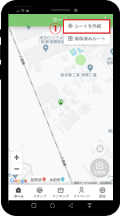
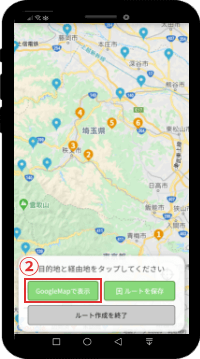
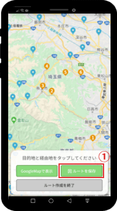
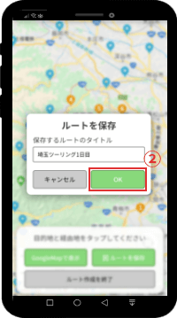
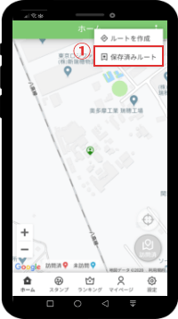
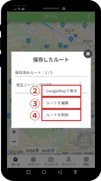

機能概要
道の駅巡りに特化したルートの設計、保存ができます。作成したルートは、GoogleMapを利用してナビゲーションに利用することができます。
使い方
ルート作成方法
-

ホーム画面の右上にあるメニューから「ルートを作成」（画像赤枠①）をタップ。
-

スタート地点、経由地点、目的地点の順にピンをタップして、「GoogleMapで表示」（画像赤枠②）をタップするとGoogleMapでプレビューおよび経路案内が利用可能です。
一度選択したピンをもう一度タップすると選択解除ができます。
緑色の現在地アイコンもタップ可能です。
ルート保存方法
-

ルートの作成が完了したら「ルートを保存」（画像赤枠①）をタップ。
-

ルートの名前を入力したら「OK」（画像赤枠②）をタップ。
※既に保存済みのルートと同じ名前で保存をした場合は上書き保存されます。
保存したルートを表示
-

ホーム画面の右上にあるメニューから「保存済みルート」（画像赤枠①）をタップ。
-

保存済みルート一覧が表示されます。ルート名の右側にあるメニューアイコンをタップすると、メニューが表示されます。 各メニューの説明は以下の通りです。
②：ルートをGoogleMapで表示します。ルートのプレビューやナビゲーションが利用可能です。
③：ルートおよびルート名を編集できます。ここをタップするとルート作成画面が表示されます。
④：保存したルートを削除します。一度削除すると復元ができません。